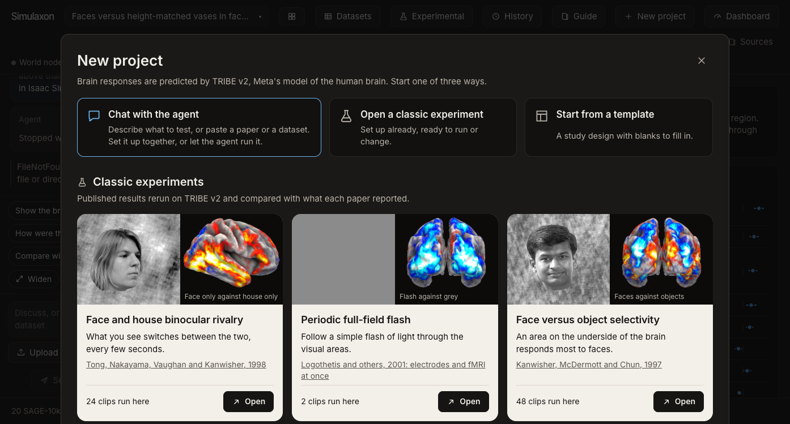
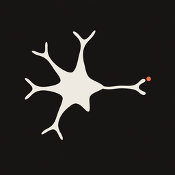
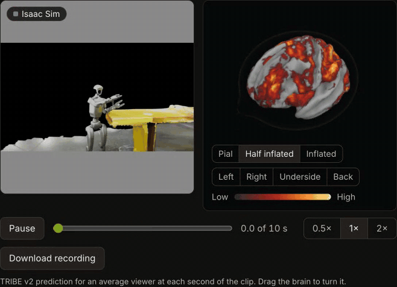
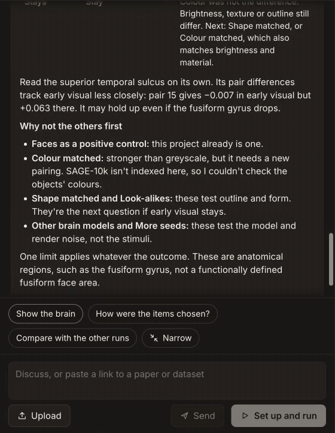
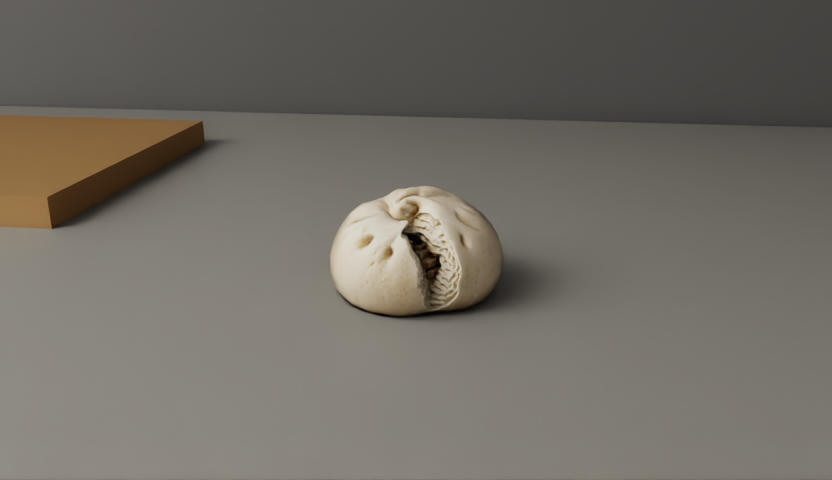
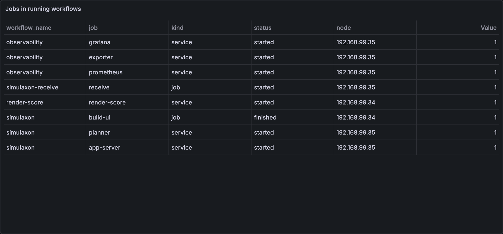
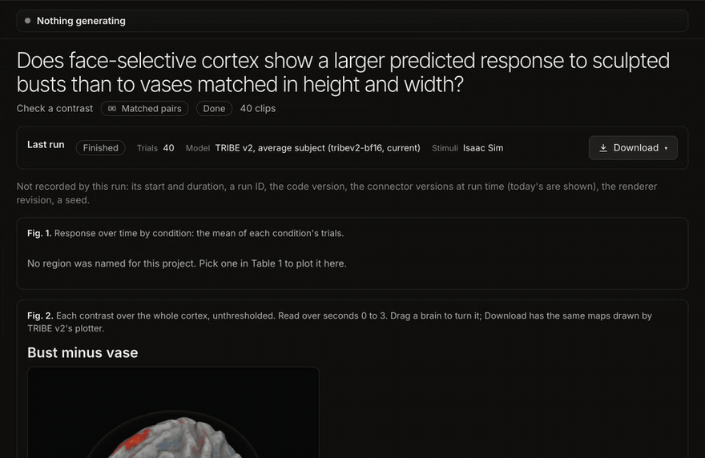
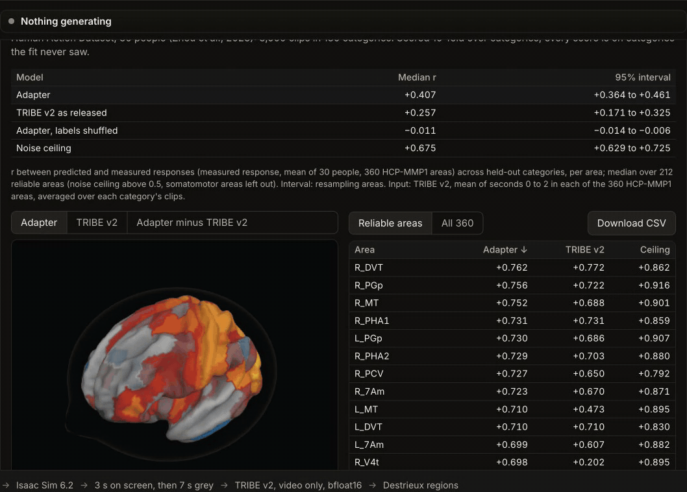

1
The agent decides what to vary and what to hold fixed.


Simulaxon
A run in the app: a G1 humanoid in a scanned room, rendered in Isaac Sim, then the same moment restyled to photoreal by Cosmos 3 Nano. Each plays for 4 s, then 6 s of grey, beside TRIBE v2's predicted response on the cortex at each moment.
Scroll
To find out what drives a response, researchers need to vary what people see, hear, or know going into a scene.
Testing those comparisons with people gets expensive fast, at tens of thousands of dollars per study.
The agent decides what to vary and what to hold fixed.

It generates the clips and compares the predicted brain responses.

It can then run a follow-up to see whether a pattern persists when another detail changes.


It trained on fMRI recordings of people watching films, television, and short videos of everyday events.
In separate evaluations, it recovered known patterns of brain activity for seeing faces versus places and hearing descriptions of emotional versus physical pain.





TRIBE v2 predicts an average viewer it has never met. Given people's measured fMRI, one click fits an adapter: a map from TRIBE v2's prediction for each brain area to the responses those people had.
In one click, the adapter raises TRIBE v2's correlation with measured fMRI by 58%, on action categories it never trained on.
The app and the video pipeline together need an estimated 150 GB of memory, so Fuzzball starts them on separate 128 GB workstations and gives both access to the same VAST storage.
When you submit a hypothesis, Nemotron Super 120B plans the experiment on the first workstation.
CIQ Fuzzball runs the planner as a service in the simulaxon workflow, started from its Fuzzfile and held back until vLLM's health check passes.
21.5 tokens/s, measured
NVFP4vllm/vllm-openai:v0.27.1MTP speculative decoding, 3 tokens0.75 GPU memory8 cores100 GiBplanner:8000
The app sends the scene specifications to the second workstation.
Fuzzball's service discovery inside the team's group gives the app render-score.<workflow-id>:8100; no public endpoint is opened.
CIQ-CHI-SPARK25nvcr.io/nvidia/isaac-sim:6.2.016 cores96 GiBrender-score.<workflow-id>:8100
Isaac Sim 6.2 renders a reference video.
NVIDIA Cosmos 3 Nano uses it to generate realistic footage.
181 s, measured
Sim-Transferedge control
TRIBE v2 predicts the fMRI response to each clip.
fsaverage5, 20,484 verticesV-JEPA 2 features
The app sends the predictions back to Nemotron to compare conditions.
CIQ-CHI-SPARK26: 115 of 122 GiB in use

If the agent chooses a follow-up, the app submits it to Fuzzball.
Fuzzball 4.3.1 runs each workflow from its Fuzzfile; a job policy sets each job's timeout, and every workflow, job and failure is listed in Grafana.
Fuzzball 4.3workflows simulaxon, render-score, observability

Each round adds its clips, predictions, and log to the same VAST volume, so you can trace each result back to what the agent changed.
The volume simulaxon-data is a Fuzzball persistent volume on the team's VAST provisioner; Fuzzball's ingress pulled the 136 GB of model weights from Hugging Face straight into it.
simulaxon-datateam13, NFS/data in every containerweights, 136 GB
GB10, 1 GPU115 of 122 GiB in use
python:3.12-slim4 cores8 GiB8791endpoint simulaxon
vllm/vllm-openai:v0.27.18 cores100 GiB1 GPU, 0.75 memoryplanner:8000NVFP4, fp8 KV cacheMTP, 3 tokens65,536 context, 4 sequences
node:24-bookworm-slim4 cores8 GiB
GB10, 1 GPU69 of 120 GiB in use
nvcr.io/nvidia/isaac-sim:6.2.016 cores96 GiB1 GPUrender-score.<workflow-id>:8100
Python environments on /data/envs
/data: weights (136 GB), envs, src, log, chunks, predictionsThe same study code runs on both.
| Machine | Role | Runs on |
|---|---|---|
| DGX Spark | Desk: lab app, interactive previews, the agent while a study is designed | Same repository |
| Fuzzball cluster GB10 nodes | Production: planner service, study runs as workflows and task arrays, Prometheus and Grafana | CIQ Fuzzball 4.3.1; study steps in Rocky Linux containers, rockylinux/rockylinux:10 |
Median per-clip correlation between the cluster's and the DGX Spark's predictions for the same clips.
Nemotron Super 120B with speculative decoding, up from 11 to 16 tokens/s without it.
From Grafana on 15 Nov: CIQ-CHI-SPARK26 holds the planner, the app server, Prometheus and Grafana. CIQ-CHI-SPARK25 has 69 of 120 GiB in use with render-score's models loaded.
Try the demoOpens the app on the cluster through fuzzball/open-app.sh
Ask the agent to design an experiment around your hypothesis.
Upload footage or describe the scenes you want to test.
Review the generated scenes and predicted responses alongside the agent's follow-up experiments.

If you have access to some fMRI recordings that you want to extrapolate on, these can be fine-tuned to customize simulation results.

Run robotics experiments that use predicted human brain responses to test whether a robot can better anticipate what someone is about to do from the way they move.